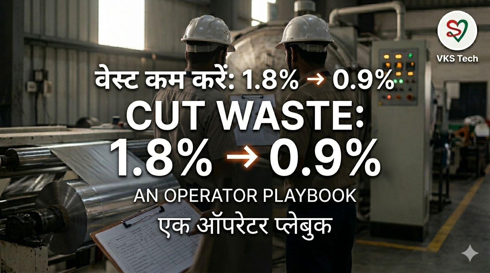
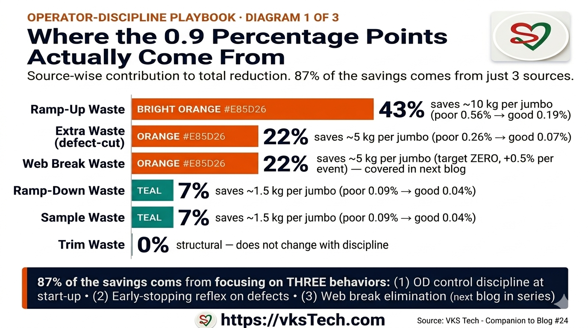
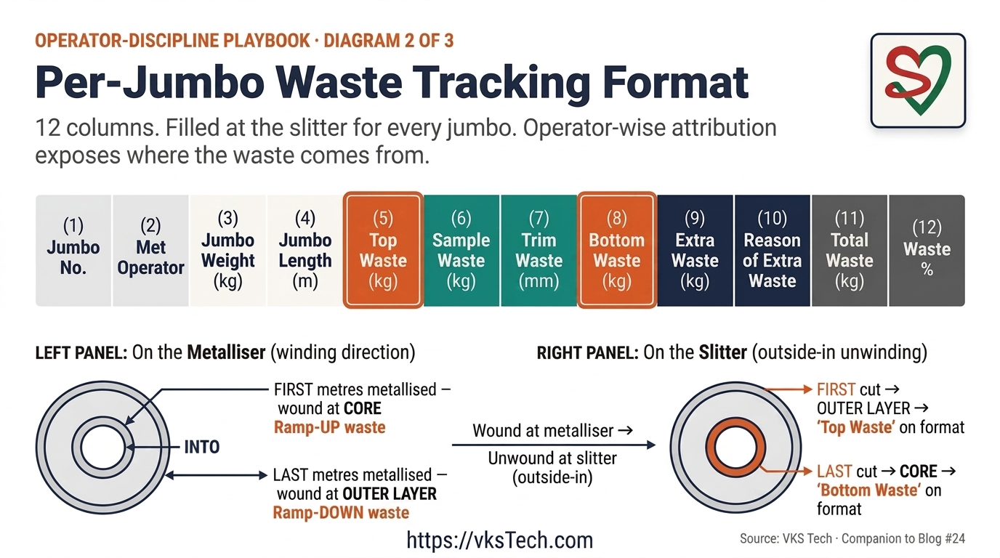
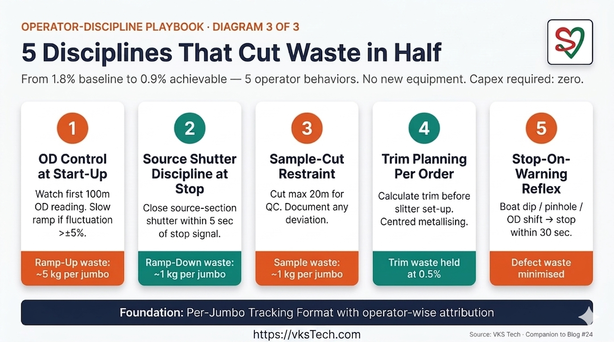
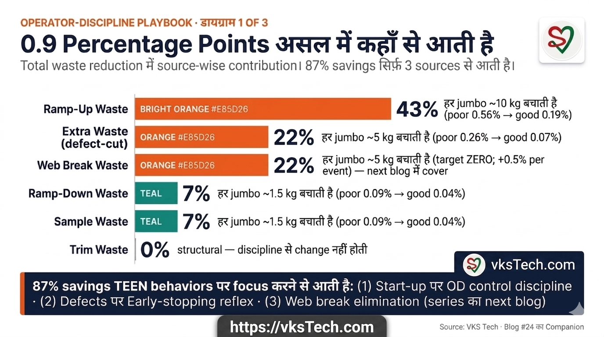
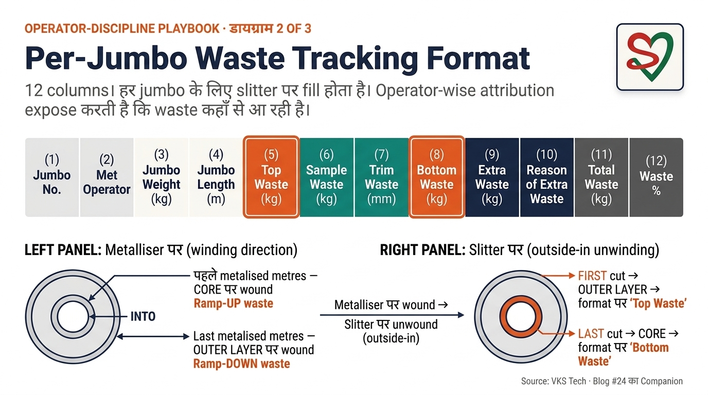
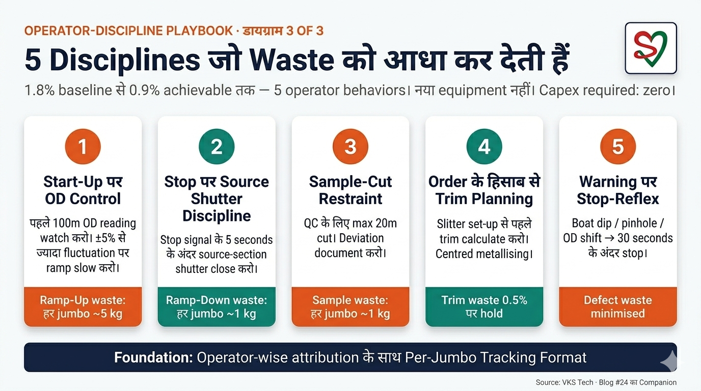

🎯 Cut Metallised Waste from 1.8% to 0.9% — A Process Engineer's Operator-Discipline Playbook
📖 21-min read | Real Plant Methodology | Published April 2026 | Bookmark for reference
Most metalliser plants in India treat waste as a fixed cost. It is not. After 9+ years on metalliser shop floors, I will tell you something that took me years to fully internalise: metallised waste is not a property of the machine. It is a property of operator decisions. The same metalliser, with the same source bar and the same recipe, will produce 1.8% waste under one operator and 0.9% under another on the very next shift. That gap — the gap between disciplined and undisciplined operators — is where the money is.
This blog is not about installing new equipment. It is about giving operators visibility into their own decisions, comparing them shift by shift, and brainstorming with the team about why some operators routinely run cleaner cycles than others. Capex required: zero. Time required: 8-12 weeks of consistent format-filling and weekly review. Typical reduction at plants where I have watched this work: roughly half the metallised waste, sometimes more.
If you are a process engineer at a flexible packaging plant — or a plant head reviewing your team — this is the playbook. It is built around four operator-controllable waste sources, one defect-prediction discipline, and a single tracking format that exposes the operator-wise pattern.
- Typical disciplined-operator metallised waste: ~0.85-0.95% per jumbo
- Typical undisciplined-operator metallised waste: ~1.6-2% per jumbo (same machine, same recipe)
- Achievable plant-average target: 0.9% across all operators in 8-12 weeks
- Volume saved (200 TPM plant): ~1.8 tonnes per month per machine
- Monthly recovery (₹200/kg bare + ₹15/kg metallising): ~₹3.9 lakh per machine
- Annual recovery per machine: ~₹47 lakh
- Capex required: Near zero — only a tracking format and a whiteboard
📍 Why Metallised Waste Is About Operator Decisions, Not Machinery
Walk into any metalliser hall during a shift change and observe two things. First, the same machine is being handed over from one operator to the next. Second, the production sheet for the previous shift will show a waste percentage. Now go back a week later and look at the same operator on the same machine across multiple shifts. The waste percentage will be remarkably consistent — for that operator. Then look at a different operator on the same machine. Different waste percentage. Same consistency for them.
That consistency is the giveaway. Operators are not random. Each operator brings a set of habits and decisions to the cycle: how aggressively they ramp up the OD at start, how decisively they close the source-section shutter at end, how disciplined they are about catching defects mid-cycle versus letting them ride. These habits accumulate into a per-operator waste signature. Plants that don't track waste by operator never see this signature, so they never improve.
This blog is built around the six waste components at a metalliser-slitter operation. Five of them are directly controllable through operator discipline (ramp-up, ramp-down, sample, trim, and defect-cut). The sixth — web break waste — is event-driven and requires action across procurement, maintenance, and operations; it gets its own dedicated playbook in the next blog of this series. Get the operator-controlled five right plus flag the web-break events for the follow-up playbook, and metallised waste collapses from ~1.8% to ~0.9%. The technique is not new. The discipline is.
🛠️ Source 1 — Ramp-Up Waste (Start of Cycle)
When a metalliser starts a fresh cycle, the optical density (OD) of the deposited aluminium does not stabilise instantly. The chamber pumps down, the sources energise, the boats heat up, and the OD ramps from zero to target over the first stretch of film. That stretch is typically lost as bare or low-OD film — it gets tagged at QC and cut at the slitter. The discipline question is: how long should that stretch be?
On a 54,000-metre jumbo, my benchmark for a disciplined operator is 100 metres of ramp-up waste. That is roughly 0.185% of the jumbo length — a tax you simply pay for the physics of the process. An undisciplined operator who lets starting OD fluctuate, runs slightly low current to "be safe", or fails to verify clamp contact at chamber close, will routinely lose 200 to 300 metres at start-up. That is 0.4-0.55% gone — three times the necessary loss — before the cycle has even reached steady state.
Three operator behaviours separate the 100-metre operator from the 300-metre operator:
- Pre-pump-down conditioning. The disciplined operator verifies boat seating, wire feed alignment, and clamp face contact before chamber close — not after. The undisciplined operator closes chamber and discovers the problem at OD ramp.
- Faster, more confident OD ramp-up. Modern source bars and properly conditioned boats can hit target current in 60-80 metres. Operators who "ramp gently" out of caution stretch this to 200+ metres without any benefit.
- Active early-cycle monitoring. The disciplined operator watches the in-line OD reading for the first 200 metres and is ready to make a small correction. The undisciplined operator sets the recipe and looks away.
Now here is the slitter-side detail that many process engineers miss: when this jumbo arrives at the slitter, the ramp-up portion sits at the core (inside) of the roll, because that was the first section wound. The slitter operator unwinds from outside-in, which means the ramp-up waste is the last section to be cut off the slitter — it appears as "Bottom Waste on Slitter" in the tracking format. That is why your slitter-side "Bottom Waste" column directly reflects the metalliser operator's start-of-cycle discipline. I will return to this in the tracking format section.
🛠️ Source 2 — Ramp-Down Waste (End of Cycle)
Cycle close is the mirror image of cycle start. As the chamber begins to depressurise and the source section shutter closes, OD degrades on the last few metres of film. A disciplined operator times the shutter close precisely so the loss is minimal. My benchmark is 20 metres of ramp-down waste on a typical end-of-jumbo cycle close. That is 0.037% — tiny.
An undisciplined operator who hesitates on shutter timing, or who does not watch the OD trace at end-of-cycle, will lose 40 to 50 metres instead. Twice the necessary loss. The cause is almost always the same: late shutter close, or not noticing OD variation during the closing sequence.
The discipline is straightforward but rarely written down anywhere:
- Pre-decided cut point. The operator knows in advance — based on jumbo length and remaining cycle time — exactly when to close the shutter. There is no improvisation at the closing minute.
- Active watching of the OD trace at close. Even a small dip in OD in the last 30 metres needs to be caught and the cut moved one metre earlier, not one metre later.
- No "let it run a bit longer" thinking. Operators sometimes try to squeeze a few more metres of good film at end of cycle. This almost always backfires — the few extra metres are usually low-OD and get cut anyway, plus the next cycle's start is now compromised because residual chamber conditions weren't reset cleanly.
On the slitter, the ramp-down portion was the last section wound onto the jumbo — so it sits on the outside of the roll. When the slitter unwinds outside-in, the ramp-down waste is the first section cut off the slitter: "Top Waste on Slitter" in the format. That column tracks the metalliser operator's end-of-cycle discipline.
🛠️ Source 3 — Sample Waste (QC Sampling at Slitter)
This one is not a metalliser-operator problem — it is a slitter-operator problem, but it shows up in the same tracking format because the same jumbo is involved. When a jumbo reaches the slitter, the QC team needs a sample for testing — OD verification, peel strength, pinhole check, whatever the spec requires. My benchmark is 20 metres of sample is enough. Some plants run as low as 10 metres for routine spec; 20 metres is comfortable.
The undisciplined slitter operator routinely cuts 40 to 50 metres for sample — sometimes because the QC team asked for "a generous piece," sometimes because the operator wants to be safe, sometimes just from habit. Every extra metre cut for sample is a metre of perfectly good metallised film going to waste.
The discipline here is even simpler than the ramp-up one:
- QC and slitter agree on a standard sample length. Write it down. Post it at the slitter. 20 metres for routine, 30 for first-jumbo-of-recipe, never more without process engineer sign-off.
- Track sample waste per slitter operator on the jumbo format. Once the operator knows their number is on the board with their name, the 50-metre habit dies in two weeks.
🛠️ Source 4 — Trim Waste (Edge Trim at Slitter)
Trim waste is structural — it comes from the slitter cutting away the edge of the metallised web to land on customer-spec width. On a 3000mm metallised web with 15mm of trim per side, trim waste is 30mm of 3000mm = 0.5% of jumbo length. That 0.5% is unavoidable for clean edges.
What is avoidable is when planning forces wider trim. If the metallised jumbo arrives at the slitter slightly off-centre, or if the slit plan does not optimise around the available width, the slitter operator may need to trim 25mm or 30mm per side instead of 15mm. That bumps trim waste from 0.5% to 0.83% or 1% — a significant addition.
This is where the process engineer earns their position. Trim waste reduction is mostly about the slit plan:
- Centre the metallising on the bare-film web. Boat alignment and source-bar uniformity should be checked weekly. A jumbo that is metallised slightly off-centre forces the slitter to over-trim one side.
- Plan slits to use the full width minus the 15mm-per-side trim. If a customer order is for 1200mm slits and the metallised width is 3000mm, two 1200mm slits + 600mm leftover means either two clean slits or three sub-optimal slits. Optimising the order book against available widths is the process engineer's job, not the slitter's.
- Reject jumbos that are already off-spec on edge OD. A jumbo with 5mm of edge oxidation cannot be salvaged at the slitter without 25mm trim per side. Cost of accepting that jumbo: 0.5pp of additional waste. Cost of investigating the boat-edge clamp issue at metalliser: one hour of process engineer time.
🛠️ Source 5 — Defect-Cut Waste (the Operator-Decision Source)
This is the source where I have seen the biggest gap between disciplined and undisciplined operators, and it is the source that no theoretical metric can capture. Mid-cycle defects happen — a boat power fluctuation creates a low-OD patch, a pinhole pattern starts to develop because of contamination, an OD shift appears because a wire is feeding unevenly. The question is: does the operator stop the machine early to investigate, or does the operator let the cycle continue and accept the defective stretch as waste?
An undisciplined operator looks at a 30-second OD dip and says "let it ride, it'll come back." Sometimes it does. Often it does not. By the time the operator finally stops to investigate, the defective stretch is 200 metres long instead of 20 metres. That extra 180 metres ends up in the "Extra Waste" column of the format.
A disciplined operator stops the machine within 30 seconds of a confirmed OD anomaly, investigates the source, makes a small correction, and resumes. The defective stretch is contained to 20-30 metres. This single behaviour — early stopping on warning signs — separates the best operators from the average ones.
Common warning signs that demand early stopping:
- Boat power fluctuation creating a sudden low-OD reading. Cause is often loose wire feed or contaminated boat surface; both can be corrected in 5 minutes.
- Pinhole pattern start visible on the inline scanner or operator's spot-check. Cause is usually contamination on the cooled drum or in the chamber. Five minutes to clean; otherwise hundreds of metres go to waste.
- Edge OD asymmetry indicating one side of the source is failing. The choice is: stop now, replace the affected boat, lose 5 minutes of cycle time, OR continue, accumulate edge-defect waste, and then deal with it later when the customer rejects the slit roll.
- Unusual chamber pressure trace. A small leak signal that the operator does not investigate becomes a vacuum-loss event 10 minutes later, with cycle abandonment and 200+ metres of waste.
Defect-cut waste is the hardest to reduce because it depends entirely on operator judgement, but it is also where the biggest gains are. I have seen plants where two operators on the same machine had 0.2% versus 0.8% defect-cut waste — purely because of how quickly they stopped on warning signs.
🛠️ Source 6 — Web Break Waste (the Event-Driven Source)
The 6th source is different in character from the first five. Sources 1-5 are continuous waste streams — every cycle generates ramp-up, every cycle generates ramp-down, every jumbo gets sampled and trimmed, every shift has some defect-cut. Web break is an event. It does not happen on every jumbo. But when it happens, the impact is significant — typically +0.5% to the affected jumbo's waste on top of the regular five sources.
What is a web break? The metallised film tears mid-cycle while the metalliser is running. The chamber depressurises, the cycle aborts, the operator must rethread the web through the rollers, re-establish vacuum, and restart the cycle. The waste generated by this event includes:
- The torn portion of the web that was already metallised before the break
- The portion of bare film unwound during the rethread that gets metallised at low quality during restart
- Additional ramp-up waste on the restart (a second ramp-up event in the same cycle)
- Sometimes the affected jumbo is rejected entirely if the customer cannot accept the splice
Target: zero web breaks per shift. A well-run plant with good film quality, properly maintained rollers, and disciplined operators can run multiple shifts without a single web break. A poorly run plant might see 1-2 web breaks per shift, each costing ~0.5% of the affected jumbo's weight in waste — typically 13-15 kg per event on a 2700 kg jumbo.
Causes of web breaks fall into three categories:
- Incoming film quality — bare film with hidden defects, edge nicks, or inconsistent gauge will tear under tension. This is procurement + incoming QC discipline.
- Roller and tension system condition — worn rollers, misaligned guides, or out-of-spec tension setpoints all create tear conditions. This is maintenance discipline.
- Operator decisions during run — incorrect tension adjustments, late response to web wander, ignoring early warning signs (slight lateral drift, audible tension noise). This is operator discipline, overlapping with Source 5 (Stop-On-Warning).
Web breaks deserve their own dedicated playbook because the prevention strategy spans three departments (procurement, maintenance, operations) and demands its own format and review cadence. That blog is coming next in this series — "Web Break Reduction at Metalliser: Target Zero kg". For now, this blog tracks web break waste under the "Extra Waste" column with reason "web break" — that is enough to flag it for measurement until the dedicated playbook is published.
📊 The Numbers — Where the 0.9 Percentage Points of Savings Actually Come From
Here is something most "reduce waste" articles do not tell you: not all 6 sources contribute equally to the savings. Reading the list above, all 6 might look equally important. They are not. When you do the math on the 1.8% → 0.9% reduction — using the benchmark numbers from the previous sections — the contribution looks like this:

| Source | Baseline (poor operator) | Target (good operator) | Reduction | Share of total savings |
|---|---|---|---|---|
| Ramp-Up Waste | ~0.56% | ~0.19% | 0.37 pp | 43% |
| Extra Waste (defect-cut) | ~0.26% | ~0.07% | 0.19 pp | 22% |
| Web Break Waste | ~0.22% | ~0.04% | 0.19 pp | 22% |
| Ramp-Down Waste | ~0.09% | ~0.04% | 0.06 pp | 7% |
| Sample Waste | ~0.09% | ~0.04% | 0.06 pp | 7% |
| Trim Waste | ~0.50% | ~0.50% | 0 pp | 0% |
| TOTAL | 1.72% | ~0.87% | 0.85 pp | 100% |
Three findings jump out:
- ~87% of the total savings comes from just three sources — Ramp-Up Waste, Extra Waste (defect-cut), and Web Break Waste. If you focus your operator coaching and maintenance attention on these three specifically, you capture nearly all of the available improvement. Ramp-down, sampling, and trim are still important — they are the "discipline floor" — but they do not move the headline number much.
- Web Break Waste deserves its own dedicated playbook because it requires action across three departments (procurement, maintenance, operations) — not just operator discipline. The follow-up blog in this series will cover web break reduction in depth. For this blog, it is captured in the "Extra Waste" column with reason "web break".
- Trim waste is structural — it does not reduce with operator discipline. 0.5% trim is built into the slitter geometry on a 3000mm web with 15mm trim per side. Process engineers who try to "reduce trim" end up spending political capital on a 0% lever. The trim column on the format exists to detect drift (sudden trim widening = boat alignment issue), not to drive reduction.
This is why the playbook puts the heaviest emphasis on (a) the OD-control discipline at start-up (Source 1), (b) the early-stopping reflex for defects (Source 5), and (c) flagging web break events for the dedicated follow-up playbook (Source 6). The other three sources are necessary but not sufficient — they are the floor, not the ceiling.
📋 The Per-Jumbo Waste Tracking Format (the Centrepiece)
Now the discipline that makes everything above stick: a per-jumbo tracking format filled at the slitter, with operator-wise attribution. This is the single most important artefact in this blog.
The format has the following columns, filled for every jumbo as it is slit:
| Column | What it captures | Reflects discipline of | Good benchmark (54,000m jumbo) |
|---|---|---|---|
| Jumbo No. | Unique jumbo identifier | (traceability) | — |
| Met Operator | Operator who ran the metalliser cycle | (accountability) | — |
| Top Waste on Slitter (m) | First-cut portion at slitter (outside of jumbo) | Metalliser operator's ramp-down | 20 m |
| Sample Waste (m) | QC sampling cut | Slitter operator + QC discipline | 20 m |
| Trim Waste (mm/side) | Edge trim per side | Process engineer's slit plan + boat alignment | 15 mm |
| Bottom Waste on Slitter (m) | Last-cut portion at slitter (core of jumbo) | Metalliser operator's ramp-up | 100 m |
| Extra Waste (m) | Anything beyond the four normal sources | Mid-cycle defects, breakdowns, anomalies | ~10-20 m |
| Reason of Extra Waste | Free-text root cause description | Investigation discipline | — |
| Total Waste (m or kg) | Sum of all above | Overall jumbo health | ~270 m + 0.5% trim |
| Waste % | Total waste as percentage of jumbo length | Overall metric | ~0.9% |

The geometry of why "Top" and "Bottom" attribute differently on the format deserves emphasis. When the metalliser winds a jumbo, the first metres metallised end up at the core, and the last metres metallised end up on the outside. The slitter unwinds from outside-in, so:
- Top Waste on Slitter = outside layer of jumbo = LAST metres on metalliser = Ramp-Down waste
- Bottom Waste on Slitter = inside (core) of jumbo = FIRST metres on metalliser = Ramp-Up waste
The slitter operator who fills the format has no idea about start-of-cycle versus end-of-cycle; they just see Top and Bottom layers. But the process engineer reading the format knows: high Bottom Waste numbers point at one specific metalliser operator's ramp-up habit; high Top Waste numbers point at the same operator's ramp-down habit. This is how operator-wise tracking exposes the source.
📊 Operator-Wise Brainstorming — the Cultural Mechanism
The format alone does nothing. What turns the format into reduced waste is the weekly review with all metalliser operators in the room. Print the previous week's data sorted by operator. Walk through the numbers without blame. Three patterns will emerge:
Pattern 1: Consistent best performer. One operator routinely posts 80-100m Bottom Waste and 15-20m Top Waste. Everyone else is at 200m and 35m. Ask the best performer to walk the team through their pre-pump-down checklist and their shutter-close routine. Don't make it a lecture — make it peer learning.
Pattern 2: Consistent worst performer. One operator's numbers are routinely double everyone else's. The conversation is private, not in the meeting. Identify the specific habits that are different. Pair them with the best performer for one week. Worst performers usually improve fastest because their gap is largest.
Pattern 3: High Extra Waste with vague reasons. An operator's "Extra Waste" column is consistently 100m+ but the "Reason" column says "machine issue" or "OD problem" without specifics. This signals reluctance to investigate. The remedy is a process engineer one-on-one walk-through of the next anomaly with that operator: stop the machine, investigate together, fill the reason properly. Once the operator sees that early-stopping plus proper investigation reduces their waste numbers (and their name on the board moves up), the habit shifts.
Within four weeks of weekly reviews, the plant-average waste percentage drops 30-40% even before any other change. Within twelve weeks, the gap between best and worst operators narrows substantially because peer learning compounds. This is the cultural mechanism that captures the "last half-percentage point" — the gap from 1.2% to 0.9% that no equipment change can deliver.
🧠 The 5 Disciplines That Move The Needle

To summarise everything above into the actionable five:
1. Per-jumbo, per-operator measurement. Without operator attribution, the rest is impossible. Print the format, post it at the slitter, fill it for every jumbo. This single change exposes 80% of the improvement opportunity.
2. Pre-pump-down conditioning discipline. The 5-minute checklist before chamber close is what separates 100m ramp-up from 300m ramp-up. Operators who rush this step pay for it for the entire cycle.
3. Pre-decided shutter close timing. The end-of-cycle ramp-down should not be improvised. The operator knows the planned cut point before the last 5 minutes; OD trace watching is for confirming, not deciding.
4. Standardised QC sample length. 20 metres, written down, posted, sign-off required for any deviation. This kills the "be safe, take a generous piece" habit.
5. Early-stopping on defect warning signs. Boat power fluctuation, pinhole pattern, edge OD shift, chamber pressure anomaly — all four demand stop-investigate-correct within 30 seconds, not "let it ride." This is the discipline that captures the largest defect-cut savings.
📊 The Math — 1.8% to 0.9% on a 200 TPM Plant
Let me put numbers on the financial picture clearly. For a plant running 200 tonnes per month of metallised film output:
| Metric | Before (1.8% waste) | After (0.9% waste) | Difference |
|---|---|---|---|
| Metallised throughput per month | 200 tonnes | 200 tonnes | — |
| Waste tonnes per month | 3.6 tonnes | 1.8 tonnes | -1.8 tonnes |
| Bare film cost recovered (₹200/kg) | — | — | +₹3.6 lakh/mo |
| Metallising cost recovered (₹15/kg) | — | — | +₹0.27 lakh/mo |
| Total monthly recovery per machine | — | — | ~₹3.9 lakh |
| Annual recovery per machine | — | — | ~₹47 lakh |
| 2-machine plant annual | — | — | ~₹94 lakh |
For a downloadable Excel calculator that lets you plug in your plant's throughput, current waste percentage, target waste percentage, and bare-film cost — and see the resulting monthly and annual recovery — see the asset pack at the end of the blog.
🔄 How to Run a Waste Reduction Project at Your Plant
If your plant's current metallised waste is 1.5-2% and you want to bring it to 0.9%, here is the 8-12 week roadmap:
Weeks 1-2 — Format roll-out. Print the per-jumbo tracking format. Train slitter operators to fill it for every jumbo. Train metalliser operators that their name will appear against every jumbo they ran. No analysis yet — just data capture.
Weeks 3-4 — Baseline analysis. Aggregate the data per operator. Identify best, worst, and average. Identify which of the 6 sources dominates each operator's waste (and which operators are most affected by web breaks). Don't share data publicly yet — just internalise the picture.
Week 5 — First operator review. Print the previous 4 weeks aggregated by operator. Hold the first review meeting. Walk through patterns without blame. Best performer shares their checklist. Action items per operator agreed.
Weeks 6-10 — Weekly reviews. Same meeting every week. Trends show. Best practices propagate. Worst performers' numbers begin to converge with average. Process engineer addresses Extra Waste reason patterns by working alongside specific operators on specific anomalies.
Week 11 — Operator-visible board. Post the previous week's per-operator waste percentage on a whiteboard at the metalliser. Names visible. Daily updates. This is the cultural mechanism that captures the final 0.2-0.3pp gain through pride.
Week 12 — Stabilise. Plant-average waste at this point should be 1.0-1.1%. The remaining 0.1-0.2pp to reach 0.9% comes from continued board discipline through months 4-6.
For complete templates — the per-jumbo format, the Extra Waste reason categories, the operator review meeting structure — see the asset pack at the end of the blog.
🔬 Common Objections — Honest Answers
"Our slitter operators won't accurately fill an 8-column format for every jumbo." They will if you start with the operator-friendly version: pre-printed sheet, one row per jumbo, fields lined up exactly with the order the slitter naturally cuts. The format I provide in the asset pack has been refined for shop-floor use — slitter operator can fill all eight fields in under 2 minutes per jumbo.
"My metalliser operators will resist having their name posted with their waste %." Resistance lasts about two weeks. Best performers love the visibility because their good numbers are now visible. Average performers compete to move up. Worst performers initially complain but improve fastest because the gap is largest. Frame the board as "best of the week" rather than "worst of the week" — the framing matters but the data does the work.
"We don't have a way to tag a jumbo to a specific metalliser operator — multiple operators run the same cycle across shifts." Then either tag the jumbo by the dominant operator (whoever ran >50% of the cycle), or tag it by the operator who closed the cycle (most defects come from end-of-cycle decisions). The exact rule matters less than consistency. Stick with one rule for 12 weeks.
"The 0.5% trim waste is not really operator-controllable — why include it in operator analysis?" True — trim waste is mostly process-engineer-controllable through slit planning and boat alignment. But it belongs in the format because it is part of total jumbo waste, and tracking it per jumbo exposes when boat alignment has drifted (sudden trim increase across multiple jumbos = boat alignment check needed). The trim column is a process-engineer KPI, not an operator KPI.
"How is this blog different from the dozen other 'reduce waste' articles online?" Honest answer: the geometry of Top/Bottom waste mapping to ramp-down/ramp-up, the operator-controllable framing as the central mechanism, and the per-jumbo format with the Extra Waste + Reason columns. Most generic "waste reduction" content treats waste as a single bucket and recommends improvements without a measurement system to attribute them to specific decisions. This blog gives you both the diagnostic and the discipline.
📥 Download the VKS Tech Metallised Waste Asset Pack
Complete kit built from this blog's methodology — everything you need to run your waste-reduction project this quarter:
- Action Card PDF (6 pages): 6-source framework, 5 disciplines, 8-12 week roadmap, blank per-jumbo tracking format with Top/Sample/Trim/Bottom/Extra columns + Reason field, blank operator-wise weekly review template, blank operator-visible board template
- Waste Savings Calculator (Excel): Plug in your plant's throughput, current waste %, target waste %, and bare-film cost. Output: daily/monthly tonnes saved, monthly ₹ recovery, annual ₹ recovery, project payback. Single sheet designed for sharing with your CFO.
Print the Action Card pages. Share the Excel with your finance team. The asset pack is your starter kit for metallised waste reduction.
📅 Coming next in this series: "Web Break Reduction at Metalliser: Target Zero kg" — a dedicated playbook for the 6th waste source that requires action across procurement, maintenance, and operations. Web breaks alone can add 0.5% per event to the affected jumbo's waste; eliminating them captures the next layer of savings beyond the operator-discipline playbook.
For SMED techniques that reduce setup-related waste, see our Boat Change SMED 2017 and Inter-Cycle SMED 2016 case studies. For boat-life optimisation that compounds these gains, see our Boat Life Optimisation blog. For overall metalliser cycle math, see 1,440-Minute Analysis.
🎯 Metallised Waste को 1.8% से 0.9% तक काटें — एक Process Engineer की Operator-Discipline Playbook
📖 25-min read | Real Plant Methodology | April 2026 में published | Reference के लिए bookmark करें
India के ज़्यादातर metalliser plants waste को fixed cost मानते हैं। ये fixed cost नहीं है। Metalliser shop floor पर 9+ साल के बाद मैं आपको एक बात बताऊँगा जो मुझे पूरी तरह समझने में सालों लगे: metallised waste machine का property नहीं है। ये operator decisions का property है। वही metalliser, वही source bar, वही recipe — एक operator के साथ 1.8% waste produce करेगा और अगले shift पर दूसरे operator के साथ 0.9%. वही gap — disciplined और undisciplined operators के बीच का gap — जहाँ पैसा है।
ये blog नया equipment install करने के बारे में नहीं है। ये operators को उनके अपने decisions में visibility देने के बारे में है, उन्हें shift by shift compare करने के बारे में, और team के साथ brainstorm करने के बारे में कि क्यों कुछ operators दूसरों से routinely cleaner cycles run करते हैं। Capex required: zero। Time required: 8-12 weeks consistent format-filling और weekly review का। Typical reduction जहाँ मैंने ये काम करते देखा है: लगभग आधी metallised waste, कभी-कभी ज़्यादा।
अगर आप flexible packaging plant पर process engineer हैं — या plant head जो अपनी team review कर रहे हैं — ये playbook है। ये चार operator-controllable waste sources, एक defect-prediction discipline, और एक single tracking format पर बनी है जो operator-wise pattern expose करता है।
- Disciplined-operator metallised waste: ~0.85-0.95% per jumbo
- Undisciplined-operator metallised waste: ~1.6-2% per jumbo (वही machine, वही recipe)
- Achievable plant-average target: 8-12 weeks में सभी operators पर 0.9%
- Volume saved (200 TPM plant): हर महीना ~1.8 tonnes per machine
- हर महीना recovery (₹200/kg bare + ₹15/kg metallising): ~₹3.9 lakh per machine
- Annual recovery per machine: ~₹47 lakh
- Capex required: लगभग zero — सिर्फ़ tracking format और एक whiteboard
📍 Metallised Waste Operator Decisions के बारे में क्यों है, Machinery के बारे में नहीं
किसी भी metalliser hall में shift change के दौरान जाएँ और दो चीज़ें observe करें। पहली, वही machine एक operator से दूसरे को handover हो रही है। दूसरी, पिछले shift का production sheet waste percentage दिखाएगा। अब एक हफ्ता बाद वापस जाएँ और वही operator वही machine पर multiple shifts पर देखें। Waste percentage remarkably consistent होगा — उस operator के लिए। फिर वही machine पर अलग operator देखें। अलग waste percentage। उनके लिए वही consistency।
वो consistency giveaway है। Operators random नहीं हैं। हर operator cycle पर habits और decisions का set लेकर आता है: कितनी aggressively वो start पर OD ramp up करते हैं, end पर source-section shutter कितनी decisively close करते हैं, mid-cycle defects catch करने में कितने disciplined हैं versus defective stretch को run होने देते हैं। ये habits per-operator waste signature में accumulate होती हैं। Plants जो operator के हिसाब से waste track नहीं करते, ये signature कभी नहीं देखते, इसलिए कभी improve नहीं करते।
ये blog metalliser-slitter operation पर छह waste components के around बनी है। उनमें से पाँच operator discipline से directly controllable हैं (ramp-up, ramp-down, sample, trim, और defect-cut)। छठा — web break waste — event-driven है और procurement, maintenance, और operations के across action demand करता है; इसे series की next blog में अपनी dedicated playbook मिलती है। Operator-controlled पाँचों सही करो plus follow-up playbook के लिए web-break events flag करो, और metallised waste ~1.8% से ~0.9% तक collapse होती है। Technique नई नहीं है। Discipline नई है।
🛠️ Source 1 — Ramp-Up Waste (Cycle की शुरुआत)
जब metalliser fresh cycle start करता है, deposited aluminium की optical density (OD) instantly stabilise नहीं होती। Chamber pump down होता है, sources energise होते हैं, boats heat up होते हैं, और OD पहले stretch of film पर zero से target तक ramp होती है। वो stretch typically bare या low-OD film के रूप में lost होती है — QC पर tag होती है और slitter पर cut होती है। Discipline question है: वो stretch कितनी लंबी होनी चाहिए?
54,000-metre jumbo पर, disciplined operator के लिए मेरा benchmark है 100 metres ramp-up waste। ये जumbo length का लगभग 0.185% है — एक tax जो आप process की physics के लिए simply pay करते हैं। एक undisciplined operator जो starting OD fluctuate होने देता है, "safe रहने के लिए" थोड़ा कम current run करता है, या chamber close पर clamp contact verify करने में fail होता है, routinely start-up पर 200 से 300 metres lose करेगा। ये 0.4-0.55% है — necessary loss से तीन गुना — cycle steady state पर पहुँचने से पहले ही।
तीन operator behaviours 100-metre operator को 300-metre operator से separate करती हैं:
- Pre-pump-down conditioning। Disciplined operator boat seating, wire feed alignment, और clamp face contact chamber close से पहले verify करता है — बाद में नहीं। Undisciplined operator chamber close करता है और problem OD ramp पर discover करता है।
- Faster, more confident OD ramp-up। Modern source bars और properly conditioned boats 60-80 metres में target current hit कर सकते हैं। "Gently ramp" करने वाले operators caution में इसे 200+ metres तक stretch करते हैं बिना किसी benefit के।
- Active early-cycle monitoring। Disciplined operator पहले 200 metres के लिए in-line OD reading watch करता है और small correction के लिए ready है। Undisciplined operator recipe set करता है और देखना बंद कर देता है।
अब यहाँ slitter-side detail है जो कई process engineers miss करते हैं: जब ये jumbo slitter पर पहुँचता है, ramp-up portion roll के core (inside) पर sit करता है, क्योंकि वो पहली section थी जो wound हुई। Slitter outside-in unwind करता है, मतलब ramp-up waste slitter से last section है जो cut होती है — ये tracking format में "Bottom Waste on Slitter" के रूप में appear होती है। यही वजह है कि आपका slitter-side "Bottom Waste" column directly metalliser operator की start-of-cycle discipline reflect करता है। मैं tracking format section में इस पर वापस आऊँगा।
🛠️ Source 2 — Ramp-Down Waste (Cycle का End)
Cycle close cycle start का mirror image है। जब chamber depressurise शुरू करता है और source section shutter close होता है, film की last few metres पर OD degrade होती है। एक disciplined operator shutter close precisely time करता है ताकि loss minimal हो। मेरा benchmark typical end-of-jumbo cycle close पर 20 metres ramp-down waste है। ये 0.037% है — बहुत छोटा।
एक undisciplined operator जो shutter timing पर hesitate करता है, या end-of-cycle पर OD trace नहीं देखता, 40 से 50 metres lose करेगा instead। Necessary loss से double। Cause लगभग हमेशा वही होता है: late shutter close, या closing sequence के दौरान OD variation को notice नहीं करना।
Discipline straightforward है पर rarely कहीं लिखी हुई:
- Pre-decided cut point। Operator advance में जानता है — jumbo length और remaining cycle time के basis पर — exactly कब shutter close करना है। Closing minute पर कोई improvisation नहीं होती।
- Close पर OD trace का active watching। आख़िरी 30 metres में OD में छोटा सा dip भी catch करना ज़रूरी है और cut को एक metre पहले move करना है, एक metre बाद नहीं।
- "थोड़ा और run होने दो" thinking नहीं। Operators कभी-कभी end of cycle पर कुछ और metres good film squeeze करने की कोशिश करते हैं। ये almost always backfire करती है — extra metres usually low-OD होती हैं और cut हो जाती हैं anyway, plus next cycle का start अब compromised है क्योंकि residual chamber conditions cleanly reset नहीं हुई।
Slitter पर, ramp-down portion वो last section थी जो jumbo पर wound हुई — इसलिए ये roll के outside पर sit करती है। जब slitter outside-in unwind करता है, ramp-down waste slitter से first section है जो cut होती है: format में "Top Waste on Slitter"। वो column metalliser operator की end-of-cycle discipline track करता है।
🛠️ Source 3 — Sample Waste (Slitter पर QC Sampling)
ये metalliser-operator problem नहीं है — ये slitter-operator problem है, पर ये same tracking format में show होती है क्योंकि वही jumbo involved है। जब jumbo slitter पर पहुँचता है, QC team को testing के लिए sample चाहिए — OD verification, peel strength, pinhole check, जो भी spec require करता है। मेरा benchmark 20 metres sample काफ़ी है। कुछ plants routine spec के लिए 10 metres पर run करते हैं; 20 metres comfortable है।
Undisciplined slitter operator routinely sample के लिए 40 से 50 metres cut करता है — कभी-कभी क्योंकि QC team ने "एक generous piece" माँगा था, कभी क्योंकि operator safe रहना चाहता है, कभी सिर्फ़ habit से। हर extra metre जो sample के लिए cut है perfectly good metallised film waste में जा रहा है।
Discipline यहाँ ramp-up वाली से भी simpler है:
- QC और slitter standard sample length पर agree करते हैं। लिख दो। Slitter पर post करो। Routine के लिए 20 metres, first-jumbo-of-recipe के लिए 30, process engineer sign-off के बिना कभी ज़्यादा नहीं।
- Jumbo format पर slitter operator के हिसाब से sample waste track करो। एक बार operator जान जाए कि उनका number उनके name के साथ board पर है, 50-metre habit दो हफ्तों में मर जाती है।
🛠️ Source 4 — Trim Waste (Slitter पर Edge Trim)
Trim waste structural है — ये slitter से आती है जो metallised web के edge को cut करता है customer-spec width पर land करने के लिए। 3000mm metallised web पर 15mm trim per side के साथ, trim waste 30mm of 3000mm = jumbo length का 0.5% है। वो 0.5% clean edges के लिए unavoidable है।
जो avoidable है वो है जब planning wider trim force करती है। अगर metallised jumbo slitter पर slightly off-centre arrive होता है, या अगर slit plan available width के around optimise नहीं करता, slitter operator को 25mm या 30mm per side trim करना पड़ सकता है instead of 15mm। ये trim waste को 0.5% से 0.83% या 1% तक bump करता है — significant addition।
यहाँ process engineer अपनी position earn करता है। Trim waste reduction mostly slit plan के बारे में है:
- Bare-film web पर metallising centre करो। Boat alignment और source-bar uniformity weekly check होनी चाहिए। Slightly off-centre metallised jumbo slitter को one side over-trim करने के लिए force करता है।
- Slits plan करो ताकि full width minus 15mm-per-side trim use हो। अगर customer order 1200mm slits के लिए है और metallised width 3000mm है, two 1200mm slits + 600mm leftover means या तो दो clean slits या तीन sub-optimal slits। Available widths के against order book optimise करना process engineer का काम है, slitter का नहीं।
- Edge OD पर already off-spec jumbos reject करो। 5mm edge oxidation वाला jumbo slitter पर 25mm trim per side के बिना salvage नहीं हो सकता। उस jumbo को accept करने का cost: additional waste का 0.5pp। Metalliser पर boat-edge clamp issue investigate करने का cost: एक hour process engineer time।
🛠️ Source 5 — Defect-Cut Waste (Operator-Decision Source)
ये source है जहाँ मैंने disciplined और undisciplined operators के बीच biggest gap देखा है, और ये source है जिसे कोई theoretical metric capture नहीं कर सकती। Mid-cycle defects होते हैं — boat power fluctuation low-OD patch create करता है, contamination की वजह से pinhole pattern develop होने लगता है, OD shift appear होती है क्योंकि wire unevenly feed कर रही है। Question है: क्या operator early machine रोकता है investigate करने के लिए, या operator cycle continue होने देता है और defective stretch को waste के रूप में accept करता है?
Undisciplined operator 30-second OD dip देखता है और कहता है "let it ride, वापस आ जाएगी।" कभी-कभी आती है। अक्सर नहीं आती। जब तक operator finally investigate करने के लिए रुकता है, defective stretch 200 metres लंबी है instead of 20 metres। वो extra 180 metres format के "Extra Waste" column में end होते हैं।
Disciplined operator confirmed OD anomaly के 30 seconds के अंदर machine रोकता है, source investigate करता है, small correction करता है, और resume करता है। Defective stretch 20-30 metres में contained है। यही single behaviour — warning signs पर early stopping — best operators को average वालों से separate करता है।
Common warning signs जो early stopping demand करती हैं:
- Boat power fluctuation सडन low-OD reading create करती है। Cause अक्सर loose wire feed या contaminated boat surface है; दोनों 5 minutes में correct हो सकते हैं।
- Pinhole pattern start inline scanner या operator के spot-check पर visible। Cause usually cooled drum पर या chamber में contamination है। Clean करने के 5 minutes; otherwise सैकड़ों metres waste में जाते हैं।
- Edge OD asymmetry indicating source का one side fail हो रहा है। Choice: अभी रोको, affected boat replace करो, 5 minutes cycle time lose करो, OR continue करो, edge-defect waste accumulate करो, और बाद में deal करो जब customer slit roll reject करता है।
- Unusual chamber pressure trace। Small leak signal जिसे operator investigate नहीं करता, 10 minutes बाद vacuum-loss event बन जाता है, cycle abandonment और 200+ metres waste के साथ।
Defect-cut waste reduce करना सबसे hard है क्योंकि ये entirely operator judgement पर depend करता है, पर ये जहाँ biggest gains हैं। मैंने वो plants देखे हैं जहाँ same machine पर दो operators के पास 0.2% versus 0.8% defect-cut waste थी — purely इस वजह से कि वो warning signs पर कितनी जल्दी रुकते थे।
🛠️ Source 6 — Web Break Waste (Event-Driven Source)
छठा source पहले पाँच से character में अलग है। Sources 1-5 continuous waste streams हैं — हर cycle ramp-up generate करता है, हर cycle ramp-down generate करता है, हर jumbo sampled और trimmed होता है, हर shift में कुछ defect-cut होता है। Web break एक event है। ये हर jumbo पर नहीं होती। पर जब होती है, impact significant है — typically +0.5% तक affected jumbo की waste में regular पाँच sources के ऊपर।
Web break क्या है? Metallised film mid-cycle में tear करती है जब metalliser run कर रही है। Chamber depressurise होता है, cycle abort होती है, operator को web rethread करनी होती है rollers से, vacuum re-establish करनी होती है, और cycle restart करनी होती है। इस event से generated waste include करती है:
- Web का वो torn portion जो break से पहले metallised हो चुका था
- Rethread के दौरान unwound bare film का portion जो restart पर low quality पर metallised होता है
- Restart पर additional ramp-up waste (same cycle में second ramp-up event)
- कभी-कभी affected jumbo entirely reject होता है अगर customer splice accept नहीं कर सकता
Target: हर shift में zero web breaks। Well-run plant जहाँ good film quality, properly maintained rollers, और disciplined operators हैं — multiple shifts बिना single web break के run कर सकता है। Poorly run plant में 1-2 web breaks per shift हो सकती हैं, हर एक affected jumbo की weight का ~0.5% waste में cost करती है — typically 2700 kg jumbo पर 13-15 kg per event।
Web breaks के causes तीन categories में आते हैं:
- Incoming film quality — Bare film hidden defects, edge nicks, या inconsistent gauge के साथ tension के नीचे tear करेगी। ये procurement + incoming QC discipline है।
- Roller और tension system condition — Worn rollers, misaligned guides, या out-of-spec tension setpoints सब tear conditions create करते हैं। ये maintenance discipline है।
- Run के दौरान Operator decisions — Incorrect tension adjustments, web wander पर late response, early warning signs (slight lateral drift, audible tension noise) ignore करना। ये operator discipline है, Source 5 (Stop-On-Warning) के साथ overlap करती है।
Web breaks dedicated playbook deserve करते हैं क्योंकि prevention strategy तीन departments (procurement, maintenance, operations) में spread है और अपनी format और review cadence demand करती है। वो blog series में next आ रही है — "Metalliser पर Web Break Reduction: Target Zero kg"। अभी के लिए, ये blog web break waste को "Extra Waste" column में reason "web break" के साथ track करता है — वो dedicated playbook publish होने तक measurement के लिए flag करने के लिए काफ़ी है।
📊 The Numbers — 0.9 Percentage Points की Savings असल में कहाँ से आती है
एक बात ज़्यादातर "waste reduce करो" articles आपको नहीं बताते: सभी 6 sources equally contribute नहीं करते। ऊपर की list पढ़कर सभी 6 equally important लग सकते हैं। हैं नहीं। जब आप 1.8% → 0.9% reduction पर math करते हैं — पिछले sections के benchmark numbers से — contribution ऐसा दिखता है:

| Source | Baseline (poor operator) | Target (good operator) | Reduction | Total savings में share |
|---|---|---|---|---|
| Ramp-Up Waste | ~0.56% | ~0.19% | 0.37 pp | 43% |
| Extra Waste (defect-cut) | ~0.26% | ~0.07% | 0.19 pp | 22% |
| Web Break Waste | ~0.22% | ~0.04% | 0.19 pp | 22% |
| Ramp-Down Waste | ~0.09% | ~0.04% | 0.06 pp | 7% |
| Sample Waste | ~0.09% | ~0.04% | 0.06 pp | 7% |
| Trim Waste | ~0.50% | ~0.50% | 0 pp | 0% |
| TOTAL | 1.72% | ~0.87% | 0.85 pp | 100% |
तीन findings jump out:
- ~87% total savings सिर्फ़ तीन sources से आती है — Ramp-Up Waste, Extra Waste (defect-cut), और Web Break Waste। अगर आप अपनी operator coaching और maintenance attention इन तीन पर specifically focus करें, आप available improvement का लगभग पूरा hissa capture कर लेते हैं। Ramp-down, sampling, और trim still important हैं — वो "discipline floor" हैं — पर वो headline number ज़्यादा move नहीं करते।
- Web Break Waste अपनी dedicated playbook deserve करती है क्योंकि इसके लिए तीन departments (procurement, maintenance, operations) में action चाहिए — सिर्फ़ operator discipline से नहीं। Series में follow-up blog web break reduction depth में cover करेगी। इस blog के लिए, ये "Extra Waste" column में reason "web break" के साथ capture होती है।
- Trim waste structural है — operator discipline से reduce नहीं होती। 0.5% trim slitter geometry में built-in है 3000mm web पर 15mm trim per side के साथ। Process engineers जो "trim reduce करने" की कोशिश करते हैं वो 0% lever पर political capital spend करते हैं। Format पर trim column drift detect करने के लिए है (multiple jumbos के across sudden trim widening = boat alignment issue), reduction drive करने के लिए नहीं।
यही वजह है कि playbook heaviest emphasis इन पर रखती है: (a) start-up पर OD-control discipline (Source 1), (b) defects के लिए early-stopping reflex (Source 5), और (c) dedicated follow-up playbook के लिए web break events को flag करना (Source 6)। बाक़ी तीन sources necessary हैं पर sufficient नहीं — वो floor हैं, ceiling नहीं।
📋 Per-Jumbo Waste Tracking Format (Centrepiece)
अब वो discipline जो ऊपर की हर चीज़ stick बनाती है: per-jumbo tracking format slitter पर fill होता है, operator-wise attribution के साथ। ये इस blog का single most important artefact है।
Format के निम्नलिखित columns हैं, हर jumbo के लिए slit होते वक़्त fill होते हैं:
| Column | क्या capture करता है | किसकी discipline reflect करता है | Good benchmark (54,000m jumbo) |
|---|---|---|---|
| Jumbo No. | Unique jumbo identifier | (traceability) | — |
| Met Operator | Operator जिसने metalliser cycle चलाई | (accountability) | — |
| Top Waste on Slitter (m) | Slitter पर first-cut portion (jumbo का outside) | Metalliser operator की ramp-down | 20 m |
| Sample Waste (m) | QC sampling cut | Slitter operator + QC discipline | 20 m |
| Trim Waste (mm/side) | Edge trim per side | Process engineer का slit plan + boat alignment | 15 mm |
| Bottom Waste on Slitter (m) | Slitter पर last-cut portion (jumbo का core) | Metalliser operator की ramp-up | 100 m |
| Extra Waste (m) | चार normal sources से beyond कुछ भी | Mid-cycle defects, breakdowns, anomalies | ~10-20 m |
| Reason of Extra Waste | Free-text root cause description | Investigation discipline | — |
| Total Waste (m या kg) | ऊपर वालों का sum | Overall jumbo health | ~270 m + 0.5% trim |
| Waste % | Jumbo length के percentage के रूप में total waste | Overall metric | ~0.9% |

क्यों "Top" और "Bottom" format पर differently attribute होते हैं — इसकी geometry पर emphasis ज़रूरी है। जब metalliser jumbo wind करता है, पहले metalised metres core पर end होते हैं, और last metalised metres outside पर end होते हैं। Slitter outside-in unwind करता है, इसलिए:
- Top Waste on Slitter = jumbo का outside layer = metalliser पर LAST metres = Ramp-Down waste
- Bottom Waste on Slitter = inside (core) of jumbo = metalliser पर FIRST metres = Ramp-Up waste
Slitter operator जो format fill करता है उसे start-of-cycle versus end-of-cycle का कोई idea नहीं है; वो सिर्फ़ Top और Bottom layers देखते हैं। पर format पढ़ने वाला process engineer जानता है: high Bottom Waste numbers एक specific metalliser operator की ramp-up habit की तरफ़ point करते हैं; high Top Waste numbers same operator की ramp-down habit की तरफ़ point करते हैं। इस तरह operator-wise tracking source को expose करती है।
📊 Operator-Wise Brainstorming — Cultural Mechanism
Format अकेले कुछ नहीं करता। Format को reduced waste में जो turn करता है वो है weekly review सभी metalliser operators के साथ room में। पिछले हफ्ते का data print करो operator के हिसाब से sorted। बिना blame के numbers में walk through करो। तीन patterns emerge होंगे:
Pattern 1: Consistent best performer। एक operator routinely 80-100m Bottom Waste और 15-20m Top Waste post करता है। बाक़ी सब 200m और 35m पर हैं। Best performer से request करो team को अपनी pre-pump-down checklist और shutter-close routine में walk करने के लिए। Lecture मत बनाओ — peer learning बनाओ।
Pattern 2: Consistent worst performer। एक operator के numbers routinely सभी से double हैं। Conversation private है, meeting में नहीं। Specific habits identify करो जो different हैं। एक हफ्ते के लिए best performer के साथ pair करो। Worst performers usually fastest improve करते हैं क्योंकि उनका gap सबसे बड़ा है।
Pattern 3: High Extra Waste with vague reasons। एक operator का "Extra Waste" column consistently 100m+ है पर "Reason" column बिना specifics के "machine issue" या "OD problem" कहता है। ये investigate करने में reluctance signal करता है। Remedy है process engineer का one-on-one walk-through next anomaly पर उस operator के साथ: machine रोको, साथ investigate करो, reason properly fill करो। एक बार operator देखता है कि early-stopping plus proper investigation उनके waste numbers reduce करता है (और board पर उनका name ऊपर move करता है), habit shift होती है।
Weekly reviews के चार हफ्तों के अंदर, plant-average waste percentage किसी और change से पहले 30-40% drop होता है। बारह हफ्तों के अंदर, best और worst operators के बीच का gap substantially narrow होता है क्योंकि peer learning compound होती है। यही cultural mechanism है जो "last half-percentage point" capture करता है — 1.2% से 0.9% तक का gap जो कोई equipment change deliver नहीं कर सकता।
🧠 5 Disciplines जो Needle Move करती हैं

ऊपर की हर चीज़ को actionable पाँच में summarise करने के लिए:
1. Per-jumbo, per-operator measurement। Operator attribution के बिना, बाक़ी impossible है। Format print करो, slitter पर post करो, हर jumbo के लिए fill करो। ये single change 80% improvement opportunity expose करती है।
2. Pre-pump-down conditioning discipline। Chamber close से पहले 5-minute checklist वो है जो 100m ramp-up को 300m ramp-up से separate करती है। जो operators इस step को rush करते हैं वो entire cycle के लिए pay करते हैं।
3. Pre-decided shutter close timing। End-of-cycle ramp-down को improvise नहीं करना चाहिए। Operator last 5 minutes से पहले planned cut point जानता है; OD trace watching confirming के लिए है, deciding के लिए नहीं।
4. Standardised QC sample length। 20 metres, लिखा हुआ, posted, किसी भी deviation के लिए sign-off required। ये "be safe, generous piece लो" वाली habit मारती है।
5. Defect warning signs पर Early-stopping। Boat power fluctuation, pinhole pattern, edge OD shift, chamber pressure anomaly — चारों 30 seconds के अंदर stop-investigate-correct demand करते हैं, "let it ride" नहीं। यही discipline है जो largest defect-cut savings capture करती है।
📊 The Math — 200 TPM Plant पर 1.8% से 0.9%
Financial picture clearly numbers में रखता हूँ। 200 tonnes per month metallised film output वाले plant के लिए:
| Metric | Before (1.8% waste) | After (0.9% waste) | Difference |
|---|---|---|---|
| हर महीना Metallised throughput | 200 tonnes | 200 tonnes | — |
| हर महीना Waste tonnes | 3.6 tonnes | 1.8 tonnes | -1.8 tonnes |
| Bare film cost recovered (₹200/kg) | — | — | +₹3.6 lakh/mo |
| Metallising cost recovered (₹15/kg) | — | — | +₹0.27 lakh/mo |
| हर machine हर महीना total recovery | — | — | ~₹3.9 lakh |
| हर machine Annual recovery | — | — | ~₹47 lakh |
| 2-machine plant annual | — | — | ~₹94 lakh |
अपने plant की throughput, current waste percentage, target waste percentage, और bare-film cost plug-in करने वाले downloadable Excel calculator के लिए — और resulting monthly और annual recovery देखने के लिए — blog के end में asset pack देखें।
🔄 अपने Plant पर Waste Reduction Project कैसे Run करें
अगर आपके plant की current metallised waste 1.5-2% है और आप उसे 0.9% तक लाना चाहते हैं, यहाँ 8-12 week roadmap है:
Weeks 1-2 — Format roll-out। Per-jumbo tracking format print करो। Slitter operators को हर jumbo के लिए fill करना train करो। Metalliser operators को train करो कि उनका name हर jumbo के against appear करेगा जो उन्होंने run किया। अभी कोई analysis नहीं — सिर्फ़ data capture।
Weeks 3-4 — Baseline analysis। Operator के हिसाब से data aggregate करो। Best, worst, और average identify करो। Identify करो कि 6 sources में से कौन सा हर operator की waste में dominate करता है (और कौन से operators web breaks से most affected हैं)। Data publicly share मत करो अभी — सिर्फ़ picture internalise करो।
Week 5 — पहली operator review। Operator के हिसाब से aggregated पिछले 4 weeks print करो। पहली review meeting hold करो। बिना blame के patterns में walk करो। Best performer अपनी checklist share करता है। हर operator के लिए action items agreed।
Weeks 6-10 — Weekly reviews। हर हफ्ता वही meeting। Trends दिखते हैं। Best practices propagate होती हैं। Worst performers' numbers average से converge होने लगते हैं। Process engineer specific operators के साथ specific anomalies पर काम करके Extra Waste reason patterns address करता है।
Week 11 — Operator-visible board। पिछले हफ्ते का per-operator waste percentage metalliser पर whiteboard पर post करो। Names visible। Daily updates। यही cultural mechanism है जो pride के through final 0.2-0.3pp gain capture करता है।
Week 12 — Stabilise। इस point तक plant-average waste 1.0-1.1% पर होनी चाहिए। 0.9% reach करने के लिए remaining 0.1-0.2pp months 4-6 में continued board discipline से आता है।
Complete templates के लिए — per-jumbo format, Extra Waste reason categories, operator review meeting structure — blog के end में asset pack देखें।
🔬 Common Objections — Honest Answers
"हमारे slitter operators हर jumbo के लिए 8-column format accurately fill नहीं करेंगे।" करेंगे अगर आप operator-friendly version से शुरू करें: pre-printed sheet, हर jumbo के लिए one row, fields exactly उस order में lined up जिस order में slitter naturally cut करता है। Asset pack में जो format मैं provide करता हूँ वो shop-floor use के लिए refined है — slitter operator हर jumbo के लिए सभी आठ fields 2 minutes से कम में fill कर सकते हैं।
"मेरे metalliser operators अपने name को waste % के साथ posted होने पर resist करेंगे।" Resistance लगभग दो हफ्ते रहती है। Best performers visibility love करते हैं क्योंकि उनके good numbers अब visible हैं। Average performers ऊपर move करने के लिए compete करते हैं। Worst performers initially complain करते हैं पर fastest improve करते हैं क्योंकि gap सबसे बड़ा है। Board को "best of the week" के रूप में frame करो "worst of the week" की बजाय — framing matter करती है पर data काम करता है।
"हमारे पास specific metalliser operator को jumbo tag करने का कोई way नहीं है — multiple operators shifts के across same cycle run करते हैं।" तब या तो dominant operator (जिसने cycle का >50% run किया) से jumbo tag करो, या जिसने cycle close की उससे tag करो (most defects end-of-cycle decisions से आते हैं)। Exact rule consistency से कम matter करता है। 12 weeks के लिए एक rule से stick करो।
"0.5% trim waste really operator-controllable नहीं है — operator analysis में क्यों include करें?" सच — trim waste mostly slit planning और boat alignment के through process-engineer-controllable है। पर format में belong करता है क्योंकि ये total jumbo waste का part है, और इसे per jumbo track करना expose करता है कि कब boat alignment drift हुआ है (multiple jumbos के across sudden trim increase = boat alignment check needed)। Trim column process-engineer KPI है, operator KPI नहीं।
"ये blog online दूसरे dozen 'reduce waste' articles से कैसे different है?" Honest answer: Top/Bottom waste को ramp-down/ramp-up पर map करने की geometry, central mechanism के रूप में operator-controllable framing, और Extra Waste + Reason columns के साथ per-jumbo format। Generic "waste reduction" content waste को single bucket treat करता है और improvements recommend करता है बिना measurement system के जो उन्हें specific decisions पर attribute करे। ये blog आपको दोनों देता है: diagnostic और discipline।
📥 VKS Tech Metallised Waste Asset Pack Download करें
इस blog की methodology से बना complete kit — इस quarter अपना waste-reduction project run करने के लिए सब कुछ:
- Action Card PDF (6 pages): 6-source framework, 5 disciplines, 8-12 week roadmap, blank per-jumbo tracking format with Top/Sample/Trim/Bottom/Extra columns + Reason field, blank operator-wise weekly review template, blank operator-visible board template
- Waste Savings Calculator (Excel): अपने plant की throughput, current waste %, target waste %, और bare-film cost plug-in करो। Output: daily/monthly tonnes saved, monthly ₹ recovery, annual ₹ recovery, project payback. Single sheet designed CFO के साथ share करने के लिए।
Action Card pages print करें, Excel अपनी finance team के साथ share करें। Asset pack आपका metallised waste reduction starter kit है।
📅 Series में next आ रहा है: "Metalliser पर Web Break Reduction: Target Zero kg" — 6th waste source के लिए dedicated playbook जो procurement, maintenance, और operations के across action demand करती है। Web breaks अकेले affected jumbo की waste में per event 0.5% तक add कर सकती हैं; इन्हें eliminate करना operator-discipline playbook से beyond next layer of savings capture करता है।
Setup-related waste reduce करने वाली SMED techniques के लिए, हमारे Boat Change SMED 2017 और Inter-Cycle SMED 2016 case studies देखें। Boat-life optimisation के लिए जो इन gains को compound करती है, Boat Life Optimisation blog देखें। Overall metalliser cycle math के लिए, 1,440-Minute Analysis देखें।